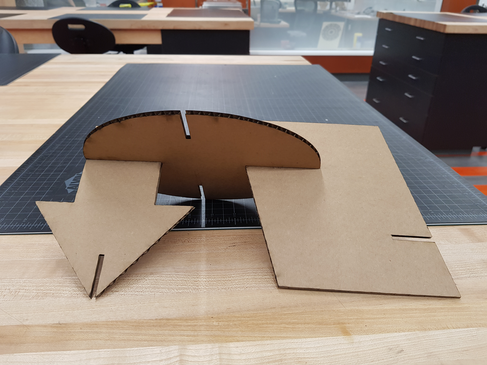
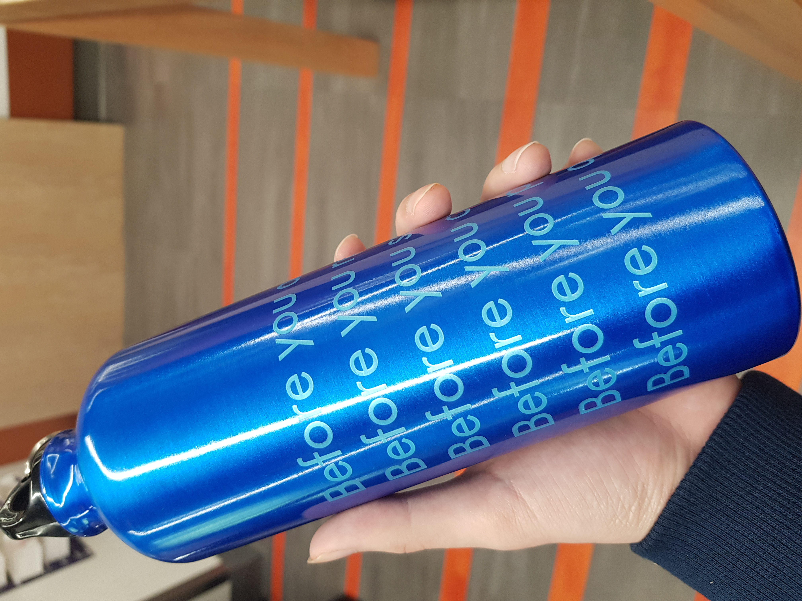
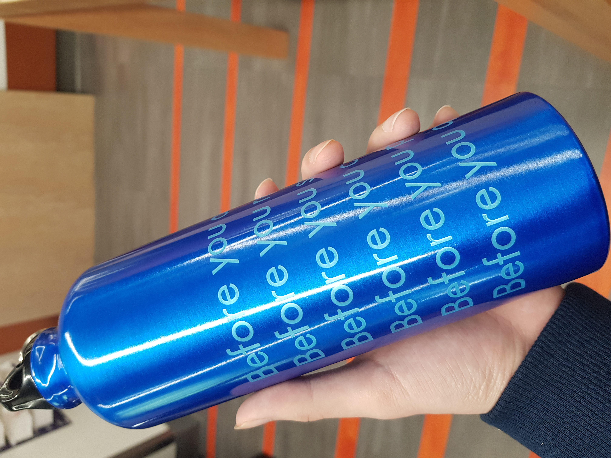

WEEK 6
Vaccuming Forming and Lamination- Skateboards
We started to use the Laser Cutter to cut through object or engrave on it. Laser cutting is basically just a laser on a CNC gantry. After we set vectors, points, the machine will operate as how we want.
First, I made a press fit kit using cardboard. It was important to cut out several of each shape and make sure they fit together snuggly. Next, I designed a sunflower for a Laser Cut Clock. I used spray paints to design my clock.
Then, I engraved a bottle. This was easy because we have done this before using cardboard. Lastly, I engraved a aluminum bookmark. This took 2minutes to engrave.

 
